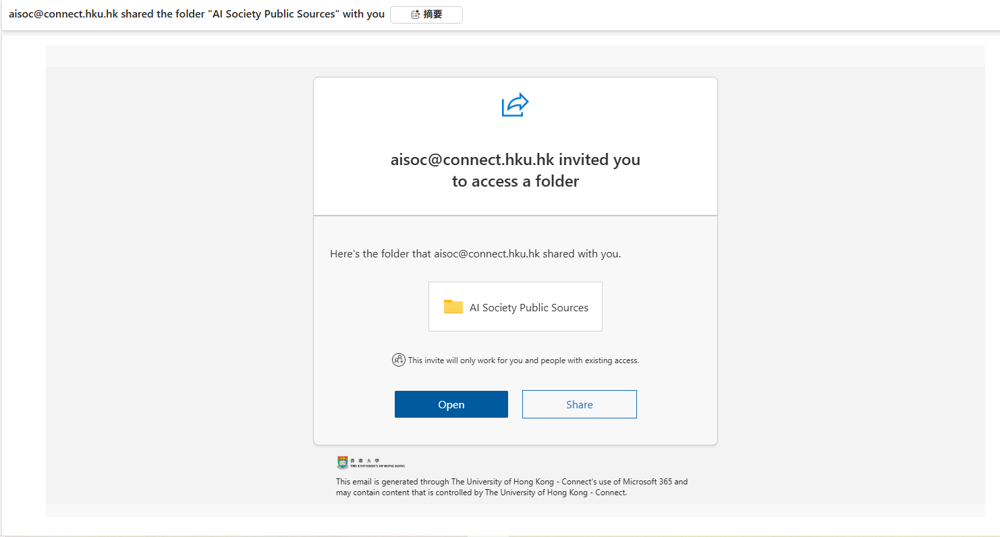
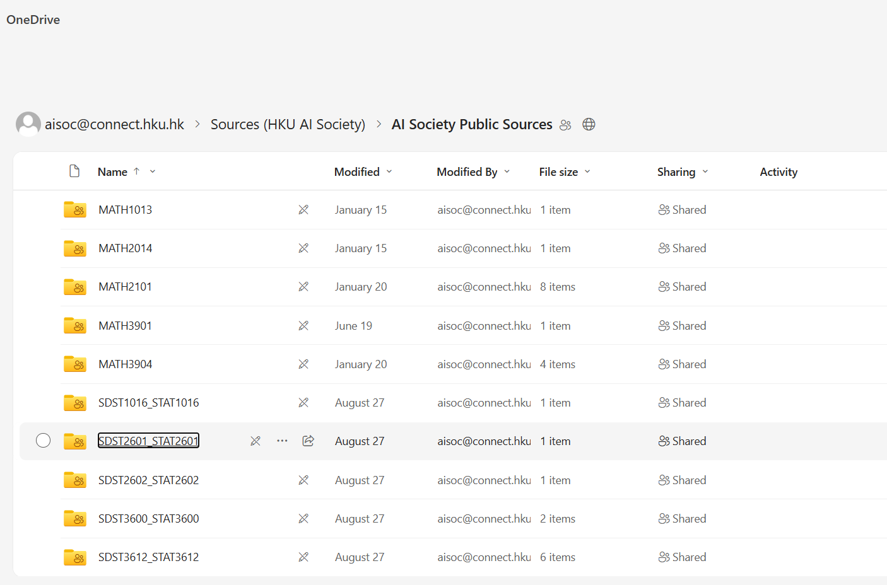
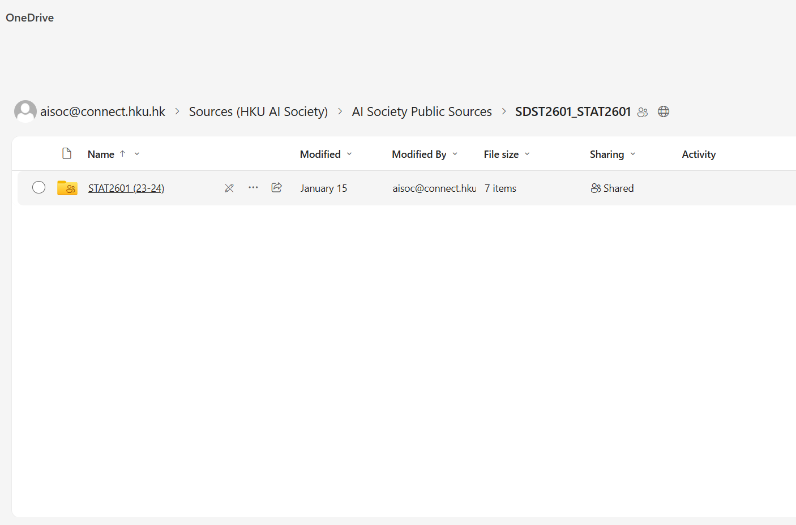
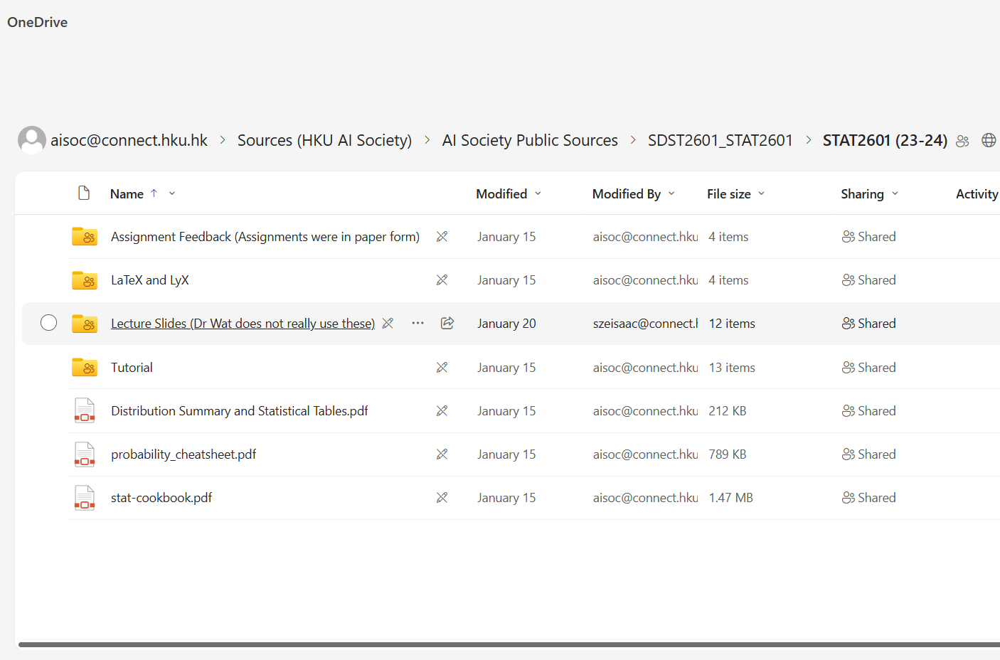
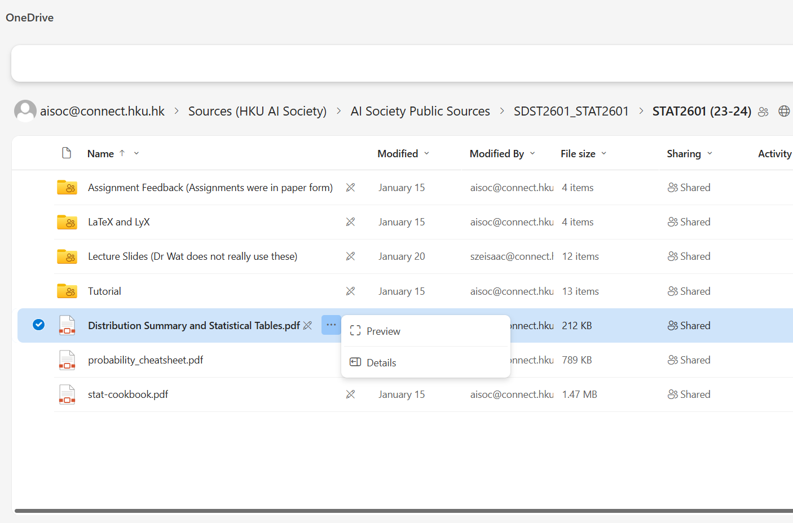
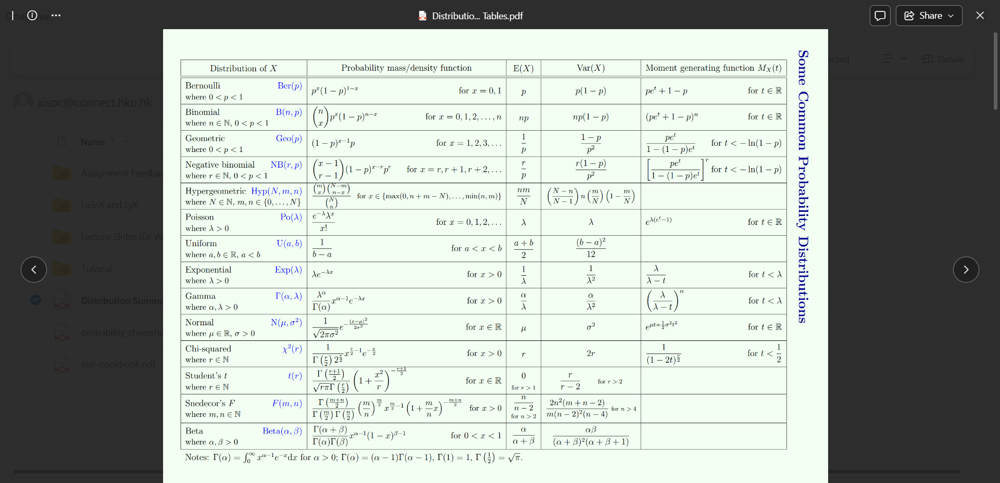

Guide on accessing the AI Soc Sources
Before you start
- You need to be a member of the AI Society and have paid your membership fee
- An invitation should be sent to you when you are a member
- If you have not received the invitation, please contact us via here

Accessing the Sources
Open the sources folder

Find the course and year that you desire

Choose a document

Click the 3 dots for more action, then click "preview"

You can now see your academic source!
